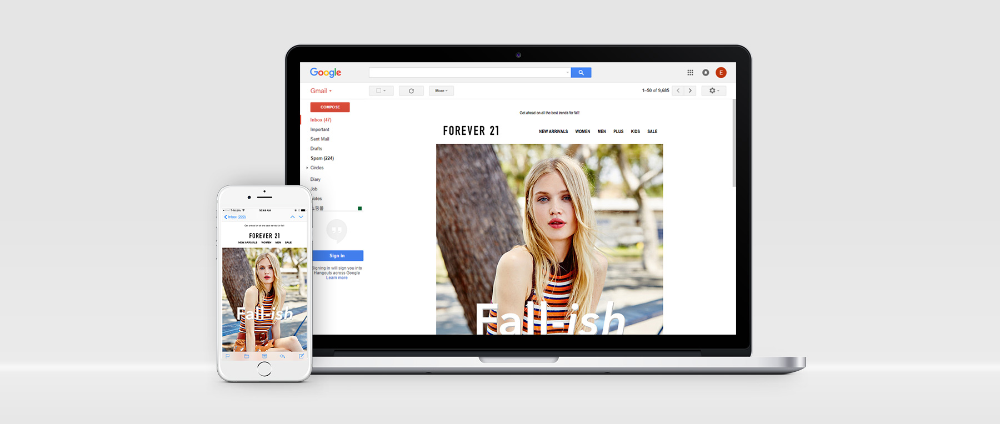

portfolio - 3
Responsive Email
Forever 21 Responsive Email Template
Forever 21 email template had relied on old fashion codes what vendor provided a long time ago. Therefore, marketing and design team have to work for each devices like Desktop, and Mobile respectively. Since I was in charged of this project, I changed to responsive design to avoid unnecessary work and be able to fit all devices with one template. After revamping, our conversion rate increased via emails.